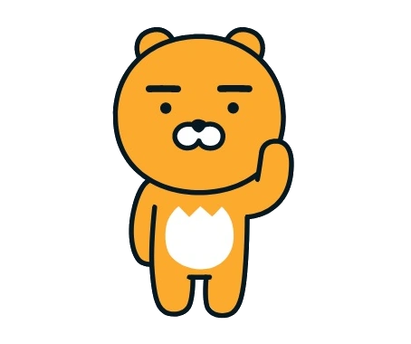

라이언
라이언은 큰 머리, 둥근 얼굴 형태, 작은 눈·코·입, 짧은 팔다리 등 유아적 비율을 단순화한 캐릭터이다. 표정 변화가 거의 없음에도 불구하고 둥근 실루엣과 '순한 인상'이 결합되어 심리적 안정감과 귀여움을 동시에 전달한다. 미니멀한 얼굴 구조는 감정 해석의 여백을 남겨 더 많은 사람들에게 보편적인 친근함을 제공한다.
자세히보기

베이비스키마는 귀여움을 만드는 공식이 아니라 감정과 인식을 자극하는
하나의 디자인 언어이다.
다양한 캐릭터 사례를 통해 그 공통된 구조를 탐구한다.
라이언은 큰 머리, 둥근 얼굴 형태, 작은 눈·코·입, 짧은 팔다리 등 유아적 비율을 단순화한 캐릭터이다. 표정 변화가 거의 없음에도 불구하고 둥근 실루엣과 '순한 인상'이 결합되어 심리적 안정감과 귀여움을 동시에 전달한다. 미니멀한 얼굴 구조는 감정 해석의 여백을 남겨 더 많은 사람들에게 보편적인 친근함을 제공한다.
자세히보기
커비는 큰 눈, 둥근 몸, 작은 팔과 다리, 단순한 표정 등 베이비스키마 요소를 가장 효과적으로 구현한 캐릭터이다. 몸 전체가 거의 머리 같은 덩어리로 보일 정도로 비율이 압축되어 있으며, 둥근 실루엣과 단순한 감정 표현은 강한 무해성과 순수함을 전달한다. 커비는 불필요한 디테일을 최소화함으로써 귀여움 요소가 시각적으로 더 빠르고 강하게 인지되도록 설계된 캐릭터이다.
자세히보기

요시는 머리가 큰 비율, 짧은 팔다리, 둥글고 통통한 실루엣, 큰 눈과 단순한 표정 등 베이비스키마 요소를 강하게 가진 캐릭터다. 둥근 코와 부드러운 색감은 유아적 순함을 강화하고, 장난스러운 행동은 미숙한 동물의 귀여운 유아성을 완성한다.요시의 전체 디자인은 캐릭터화된 아기 동물의 구조를 기반으로 하고 있다.
자세히보기